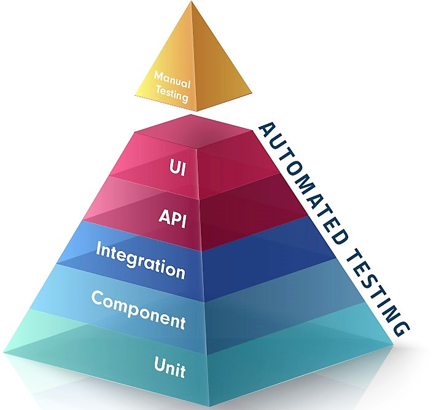

Introduction to Unit Testing
Organized for developers by developers
Plan
- Motivation
- Principles
- Design your test
- FizzBuzz Demo
- Hands On
Today's Goals
- Advantages and disadvantages of unit testing
- Learn unit testing principles
- Learn unit testing best practices
Motivation
Short-term benefits
- Helps to design your code
- Explicitly describes method behavior
- Fast feedback loop
- Visualizes continous progress
- Rewarding
Long-term benefits
- Explicit up-to-date documentation
- Asserts correctness of implementation
- Do not fear refactoring
- Breaking code gives direct feedback
- More trust on releasing the product
- Commit with confidence
Disadvantages
- Time investment
- Tests need to be maintained
- Increases build time
- Unit test path might be tricky
Principles
The test world
| Test level | Scope | Example |
|---|---|---|
| Manual | Whole application | Penetration test |
| UI | UI behavior | Form validation |
| API | Public interfaces | Call web service |
| Integration | Component + external dependencies | Databases, files |
| Component | Unit + internal dependencies | Objects interaction |
| Unit | Smallest unit | Classes, functions |
Costs

Unit test properties (FIRST)
- Fast
- Isolated
- Repeatable
- Self-verifying
- Timely
Fast
- Milliseconds
- No IO, DB, web client...
- No time consuming processing
- You should never hesitate to execute unit tests
Isolated
- Only execute code in the unit under test
- Mock external dependencies (Workshop #3)
- Independent of tests order execution
- Executing any test always produces the same result
Repeatable
- Deterministic result
- Independent of environement (timezone, locale, line endings...)
- Each test should setup/arrange it's own data
Self-verifying
- No manual check
- Green or red
- Direct feedback
Timely
- Test should be written during implementation
- Workshop #2 | TDD
Design your test
Best practices
- Test class name should be named
[TestedClass]Tests - Test method name should follow GivenWhenThen pattern
- Test method should follow arrange-act-assert
Arrange
- Set up
- Control on inputs - side effects
- Should be small (if not: code smell/too much dependencies)
Act
- Call the tested code
- One liner
- Keep call's result for assertion
Assert
- Assert a single logical outcome
- One liner
FizzBuzz Demo
Hands On
Today you've learned
- What are the unit test properties
- How to write them
Next workshop
- Red green refactor
- TDD is a tool
Feedback
- By hand rate from 0 to 5
- Contact us directly or by mail for any feedback ;)